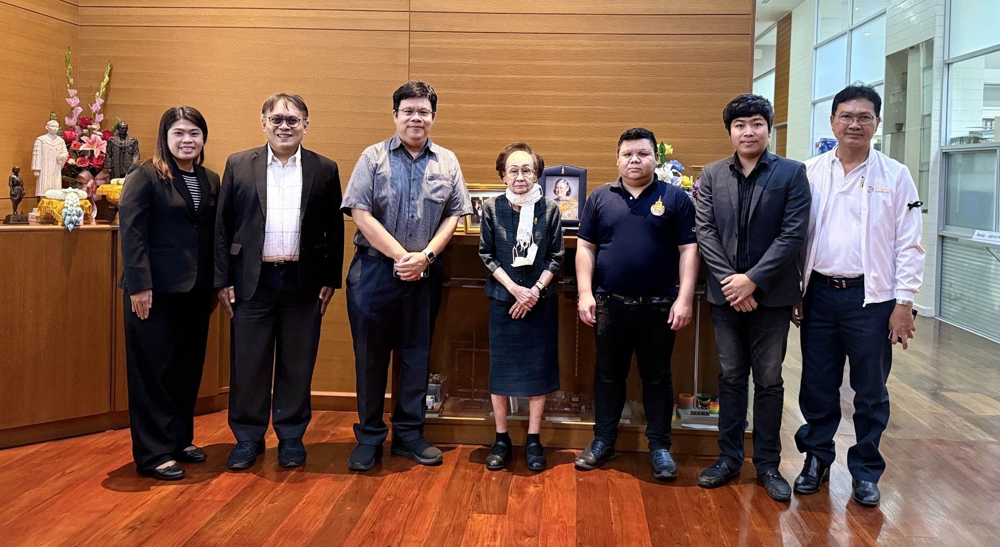

การขยายศูนย์ สอวน. คอมพิวเตอร์สู่ภาคกลางตอนบน คืออีกก้าวสำคัญของการกระจายโอกาสให้เด็กที่มีศักยภาพเข้าถึงได้จริง
{kind=link}

บทความนี้เล่าการประชุมที่มูลนิธิ สอวน. ซึ่งถือเป็นอีกก้าวสำคัญของการขยายโอกาสด้านวิทยาการคอมพิวเตอร์ในภาคกลางตอนบน ผ่านการจัดตั้งศูนย์ใหม่และการปรับความรับผิดชอบของศูนย์เดิมให้สอดคล้องกับภูมิศาสตร์และข้อจำกัดการเข้าถึงของพื้นที่จริง
สาระสำคัญของการเปลี่ยนแปลงครั้งนี้ไม่ได้อยู่แค่ชื่อมหาวิทยาลัยหรือการโยกจังหวัด แต่คือการยอมรับผ่านข้อมูลว่า มีหลายจังหวัดที่ยังมีผู้เข้าร่วม น้อยกว่าศักยภาพที่ควรจะเป็น และระบบจำเป็นต้องขยับอย่างจริงจังเพื่อให้โอกาสเดินทางไปถึงเด็ก
จุดแข็งของโพสต์นี้คือการแสดงให้เห็นว่าการขยายศูนย์ สอวน. ไม่ได้เกิดจากความรู้สึกล้วน ๆ แต่เกิดจากการอ่านข้อมูลผู้สมัครและการมองแผนที่โอกาสทางการศึกษาอย่างจริงจัง จึงเป็นตัวอย่างชัดของการใช้ข้อมูลเพื่อออกแบบนโยบายเชิงพื้นที่
ศูนย์ใหม่ไม่ได้มีไว้แค่รับผิดชอบจังหวัด แต่มีไว้แก้โจทย์พื้นที่ที่ยังเข้าไม่ถึงระบบ
การให้ มทร.ธัญบุรีเป็นศูนย์มหาวิทยาลัยใหม่ของภาคกลางตอนบน พร้อมเครือข่ายโรงเรียนในสุพรรณบุรีและชัยนาท สะท้อนว่าระบบกำลังพยายามวางหน่วยสนับสนุนให้ใกล้กับพื้นที่ที่ยังมีผู้เข้าร่วมน้อยมาก โดยเฉพาะชัยนาท สุพรรณบุรี และอุทัยธานี
มุมนี้ทำให้ศูนย์ใหม่ไม่ใช่เพียงเรื่อง administrative convenience แต่เป็นการสร้าง infrastructure ของโอกาส ให้เด็กในพื้นที่ที่ห่างจากมหาวิทยาลัยใหญ่เริ่มเข้าถึงสนามวิชาการคอมพิวเตอร์ได้จริง
ข้อมูลจากปีที่ผ่านมาคือเหตุผลสำคัญของการขยับ ไม่ใช่การคาดเดา
ผู้เขียนย้ำว่าหนึ่งในเหตุผลหลักของการปรับศูนย์ครั้งนี้คือข้อเท็จจริงที่พบว่า นักเรียนจากชัยนาทและสุพรรณบุรีสมัครเข้าค่าย สอวน. สาขาคอมพิวเตอร์น้อยมาก ทั้งที่เป็นจังหวัดที่มีโรงเรียนขนาดใหญ่และมีศักยภาพสูง
สิ่งนี้ทำให้ชัดว่า ระบบเดิมอาจไม่ได้ล้มเหลวเพราะเด็กไม่มีศักยภาพ แต่เพราะโครงสร้างการเข้าถึงยังไม่เหมาะกับบริบทพื้นที่ ดังนั้นการขยับศูนย์จึงเป็นการตอบโจทย์ด้วย structural correction มากกว่าการกล่าวโทษใคร
ความหวังไม่ได้อยู่แค่การตั้งศูนย์ แต่เกิดตอนลงพื้นที่แล้วเห็นโรงเรียนตื่นตัวจริง
ช่วงที่มีน้ำหนักมากในโพสต์นี้คือการบอกว่า เมื่อทีมงาน สอวน. ลงไปในพื้นที่จริง โรงเรียนและครูต่าง ๆ แสดงความสนใจและเกิดความตื่นตัวทันที นี่ทำให้เห็นว่าโอกาสทางการศึกษาไม่ได้หายไปเพราะคนในพื้นที่ไม่สนใจเสมอไป แต่อาจหายไปเพราะระบบยังไม่เคยยื่นมือไปถึงเขาอย่างจริงจัง
ประโยคนี้เปลี่ยนภาพจากการมองพื้นที่เงียบ ๆ ว่าเป็นพื้นที่ไร้พลัง ไปเป็นพื้นที่ที่ยังมี latent potential รอการปลุกอย่างเหมาะสม
ข้อสรุปคือการกระจายโอกาสเชิงพื้นที่อาจสร้างผลกระทบมากกว่าที่คิดในระยะยาว
ผู้เขียนหวังว่าการตั้งศูนย์ใหม่ครั้งนี้จะสร้างผลกระทบเชิงบวกแบบก้าวกระโดด และเปิดประตูให้เด็กไทยอีกหลายร้อยคนได้ค้นพบศักยภาพของตนเองในอนาคต มุมนี้ทำให้โพสต์ไม่ใช่แค่รายงานมติประชุม แต่เป็นภาพของการ ค่อย ๆ ขยับโครงสร้างการศึกษา เพื่อเปลี่ยนเส้นทางชีวิตของคนจำนวนมาก
ดังนั้น บทความนี้จึงเป็นอีกชิ้นสำคัญในชุด TOI/สอวน. ที่ชี้ว่า ถ้าระบบใช้ข้อมูลถูกที่และลงมือแก้ในระดับโครงสร้าง โอกาสทางวิทยาการคอมพิวเตอร์ก็สามารถเดินทางไปถึงพื้นที่ที่เคยถูกมองข้ามได้จริง